Photography helps me observe light, angles, color, and quiet details that are easy to miss.
It also improves my visual sense for design and composition.
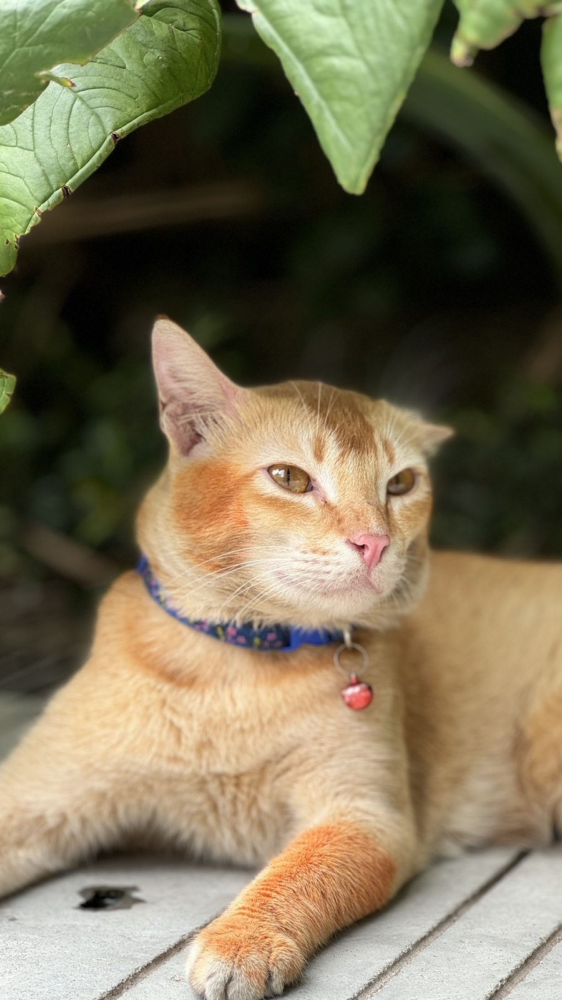
A Mischief Orange Cat 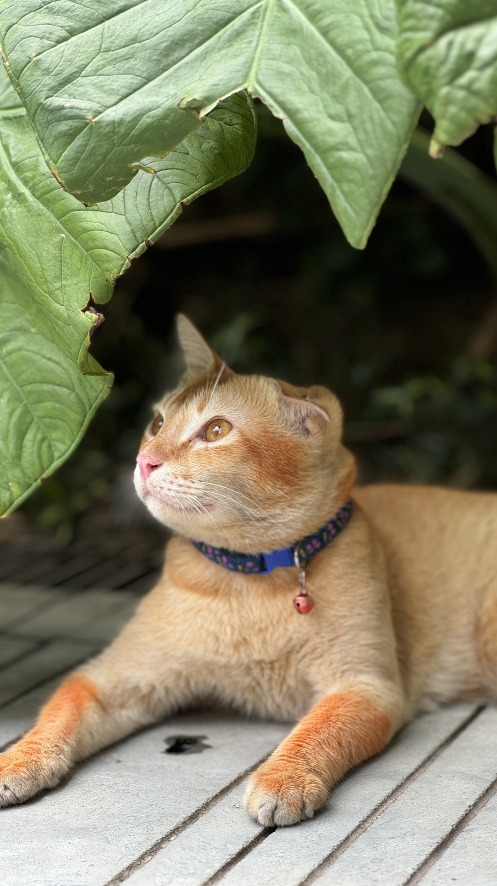
Light and Shadow 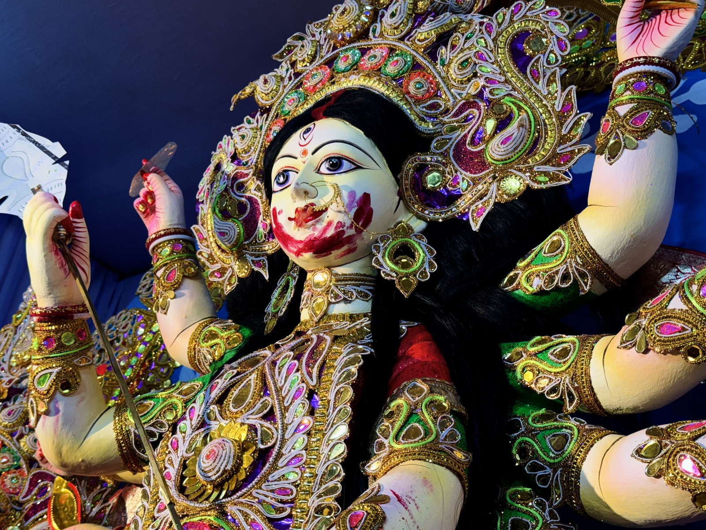
Maa Durga - Doshomi er Belay 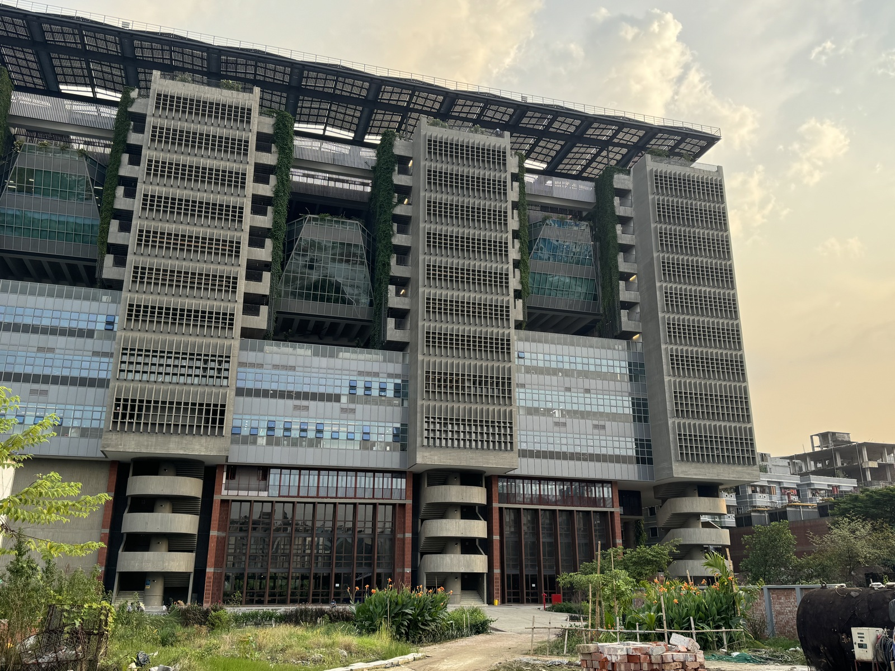
My Campus during SunSet India's Air 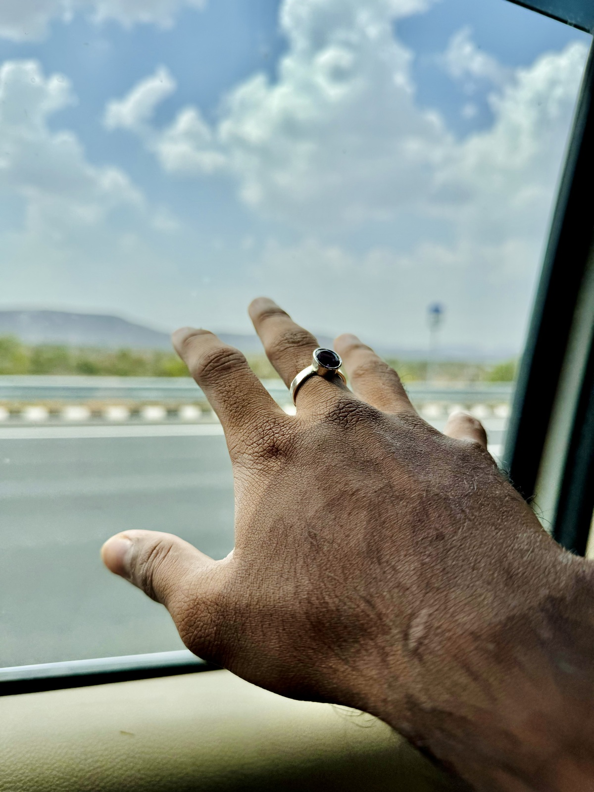
Choo Loo 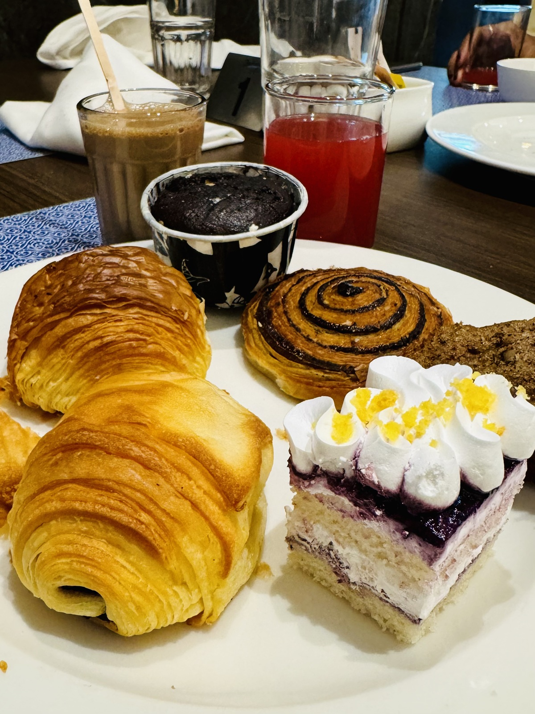
Desert 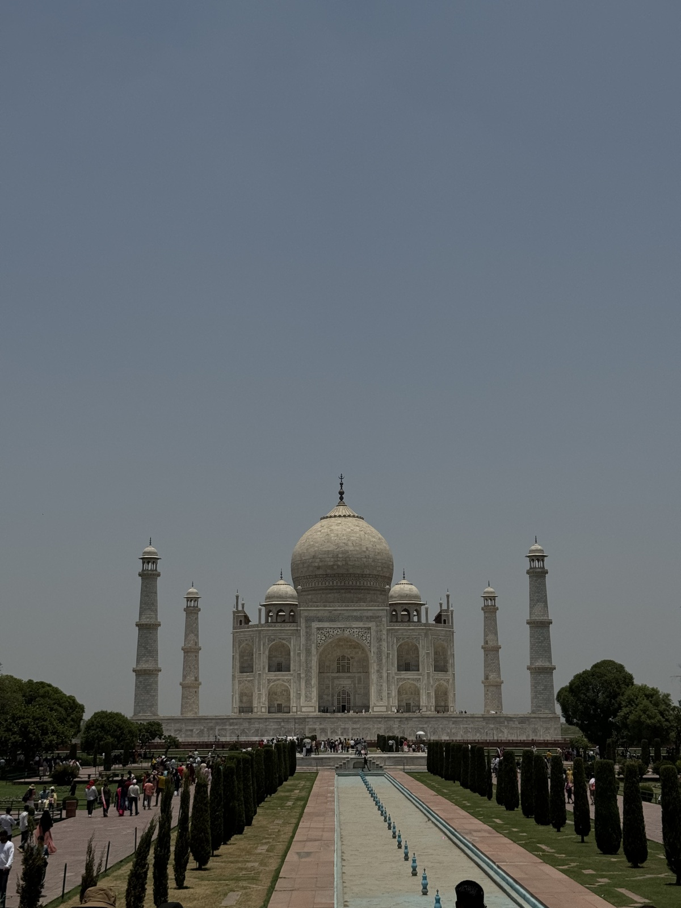
Taj Mahal 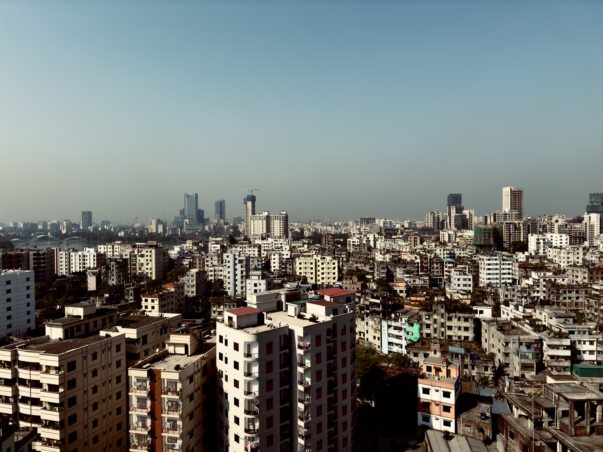
Dahaka City Hatir Jhil 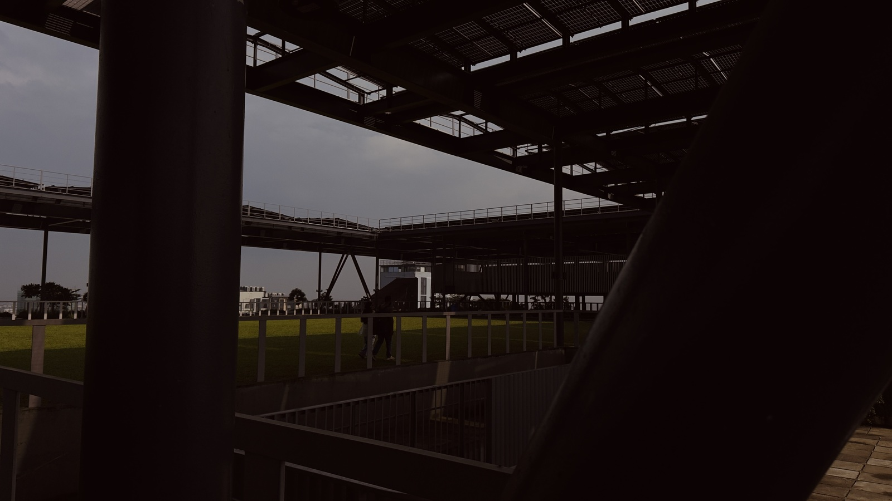
!3th floor BracU Campus
Gaming is one of my favorite ways to relax and sharpen strategy, patience, reaction,
and problem-solving skills.
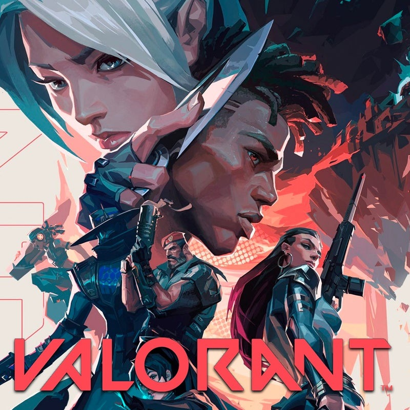
Valorant BreakPoint RDR2 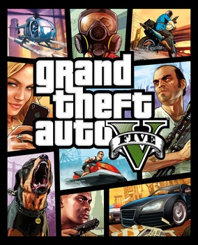
GTA5 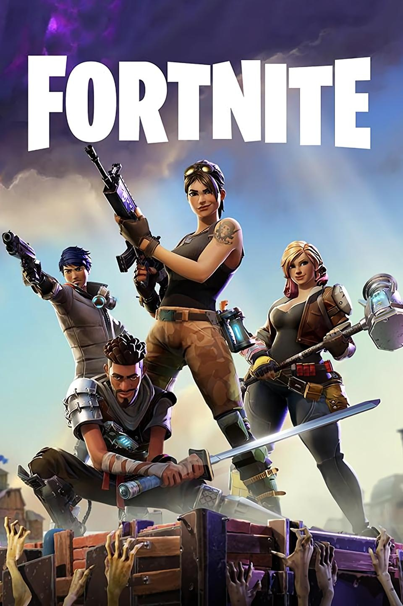
Fortnite 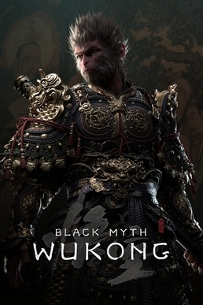
Wukong Uncharted 4 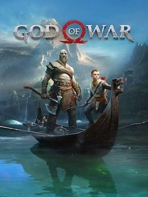
God of War
✎
Art / Sketch / Drawing
Sketching lets me turn imagination into shapes. It helps me think visually,
which is also useful when designing website layouts and interfaces.
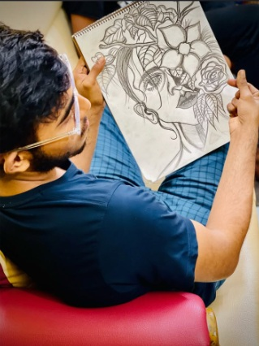
Art / Sketch / Drawing
◈
Perfume Collector
Perfume collecting connects memory, detail, style, and personality. I enjoy exploring
different notes, bottle designs, and scent profiles.
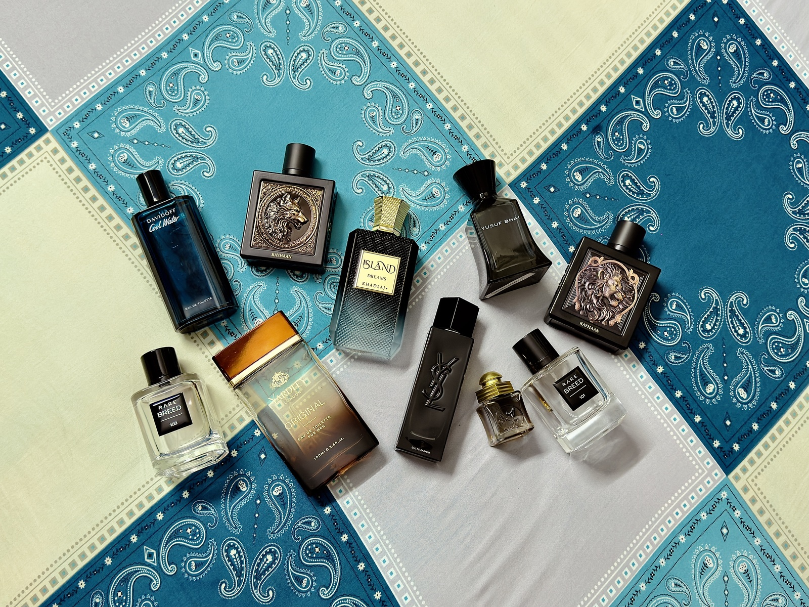
Perfume Collector